Thirty Pieces of Silver
Zechariah priced the betrayal five hundred years early: thirty pieces of silver, thrown down in the house of the LORD.

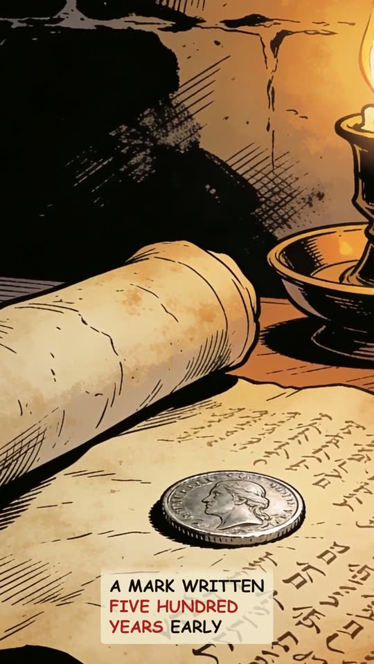
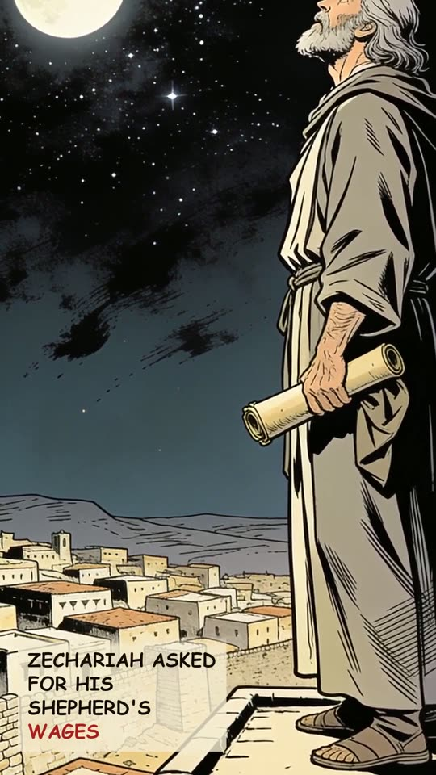
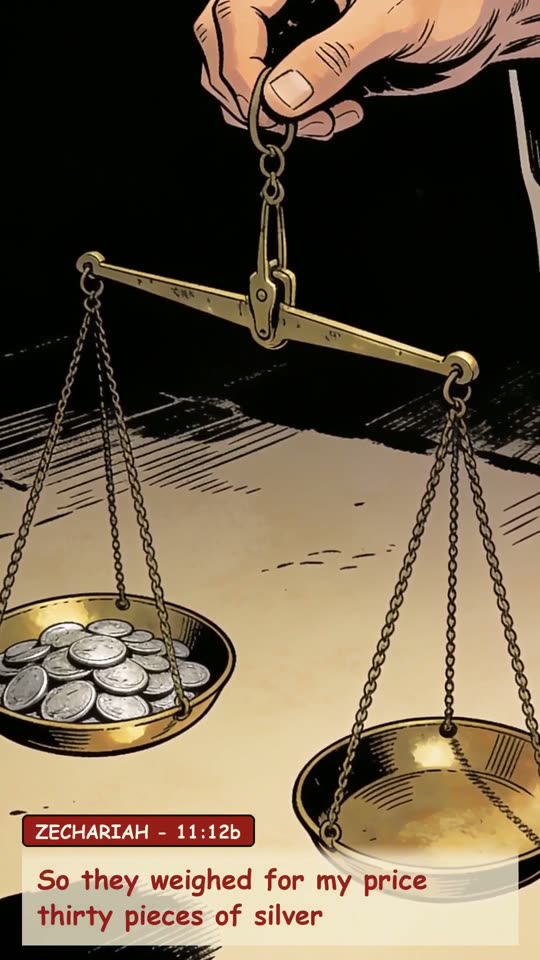
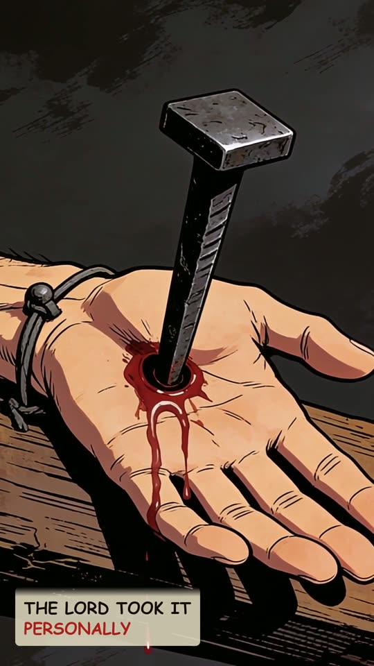
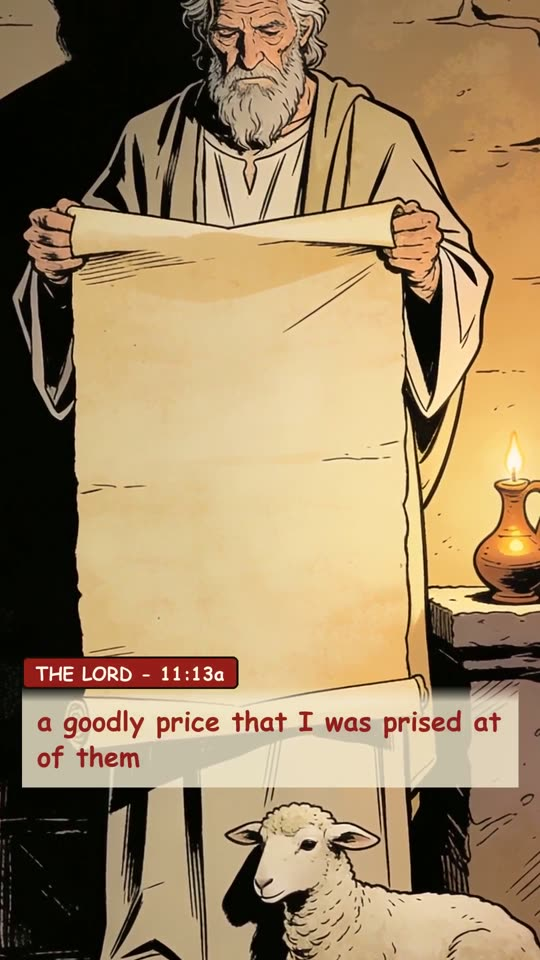
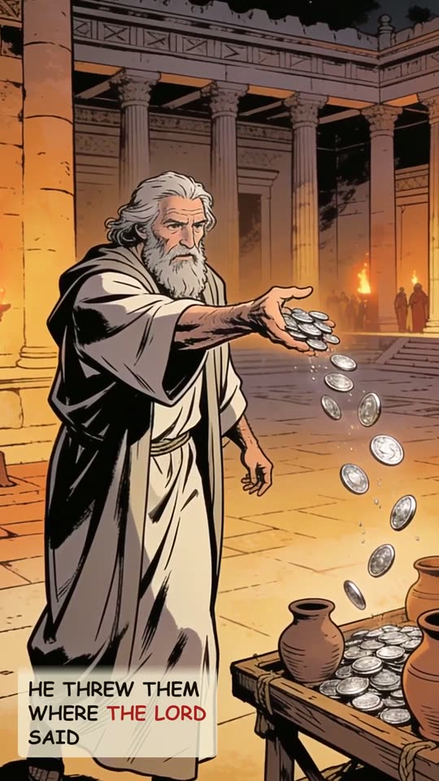
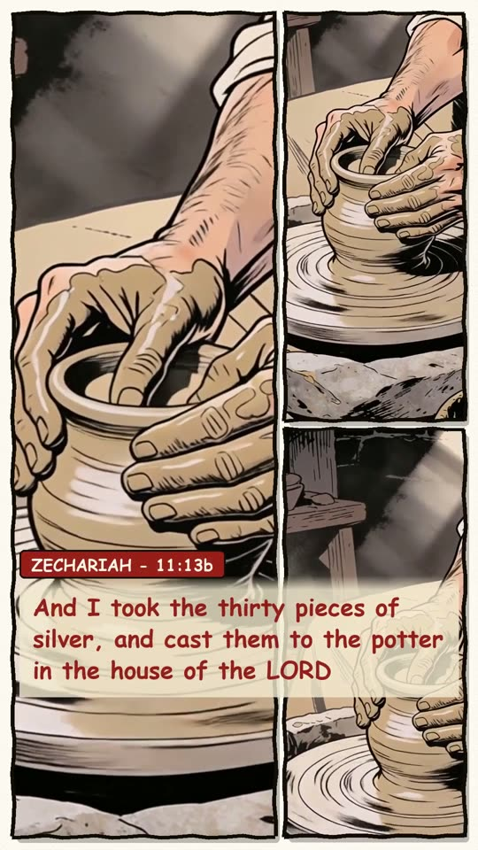
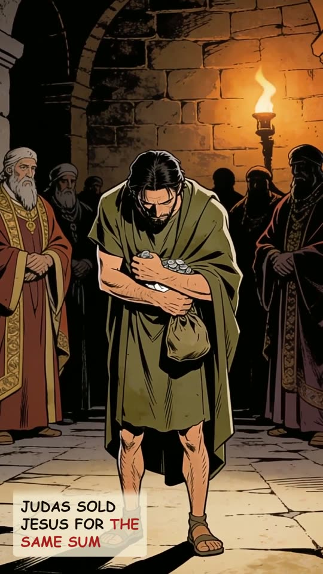
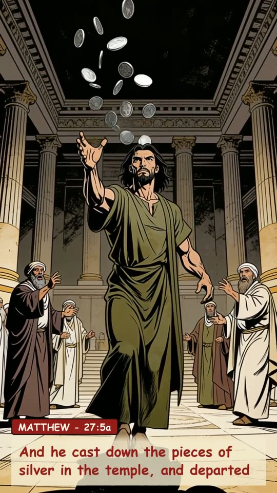
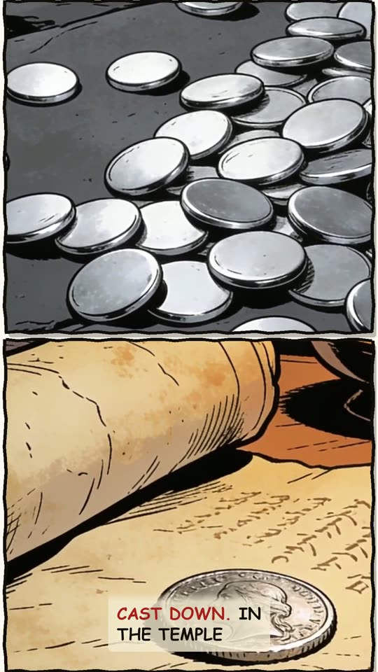
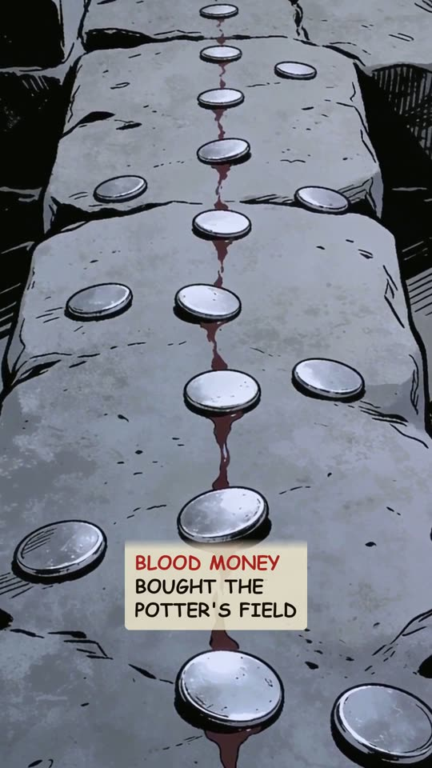
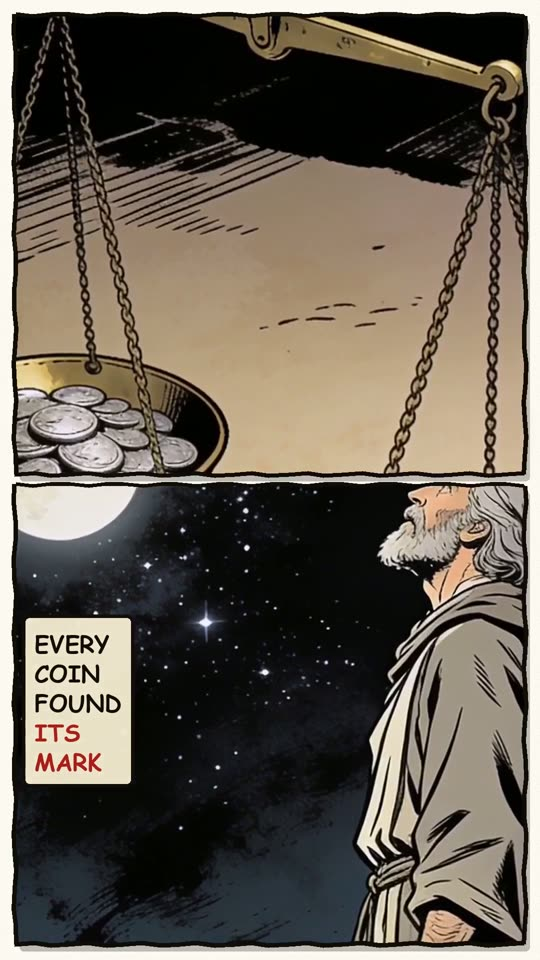
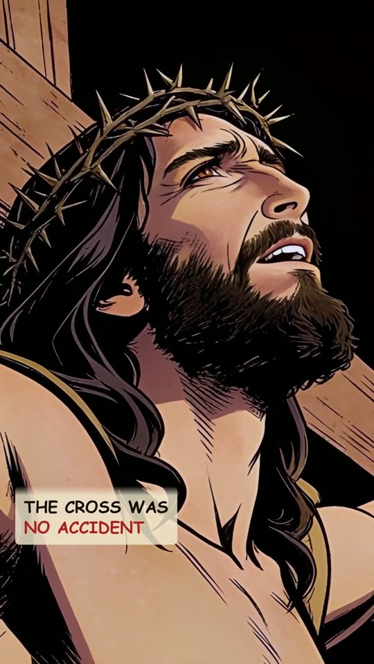
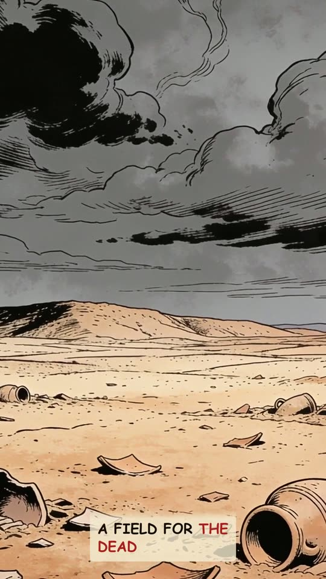
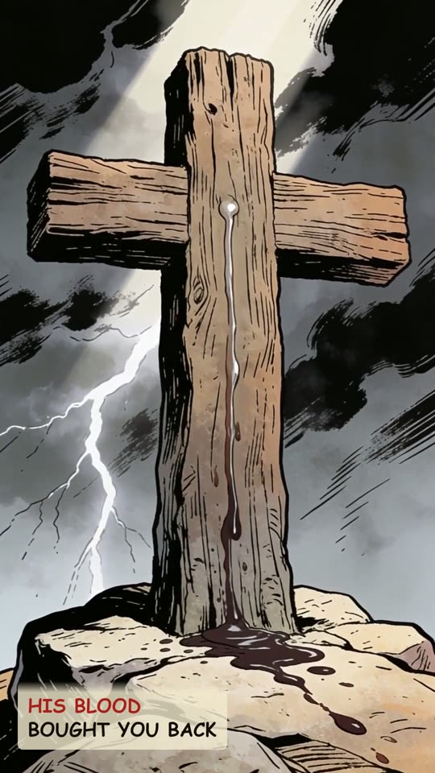
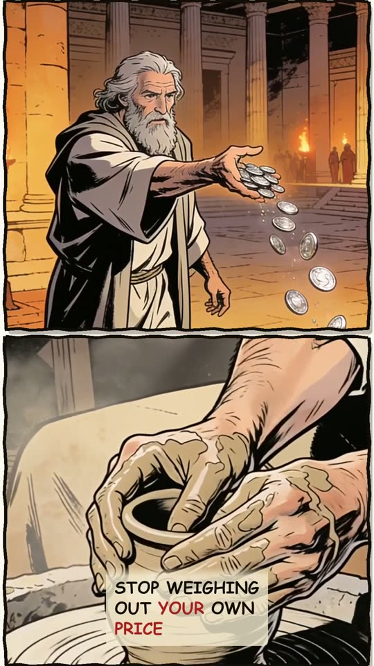
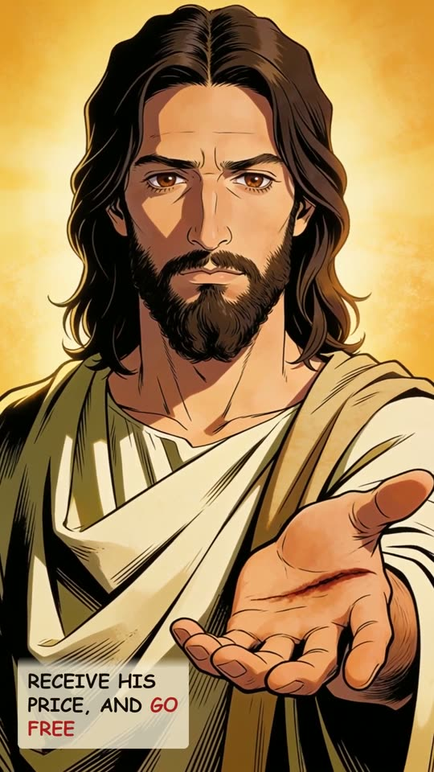
The narration
Thirty silver coins hit the temple floor. Each one lands on a mark written five hundred years early. Five centuries before, Zechariah asked Israel for his shepherd's wages. So they weighed for my price thirty pieces of silver. Thirty shekels. The law's price for a slave. The LORD took it personally. A goodly price that I was prised at of them. And Zechariah threw them where the LORD said. And I took the thirty pieces of silver, and cast them to the potter in the house of the LORD. Then Judas sold Jesus for the same sum. And he cast down the pieces of silver in the temple, and departed. Cast down. In the temple. The priests took it. Blood money. It bought the potter's field. Nobody was trying to fulfil prophecy. Every coin found its mark. The cross was no accident. Jesus let himself be weighed like a slave. The silver bought a field for the dead. His blood bought you back. Stop weighing out your own price. Receive his price, and go free.